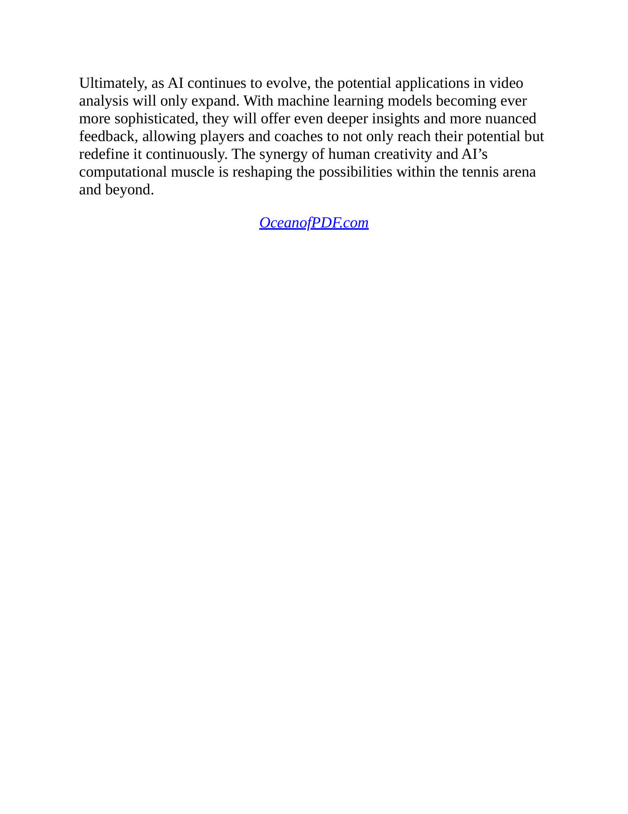
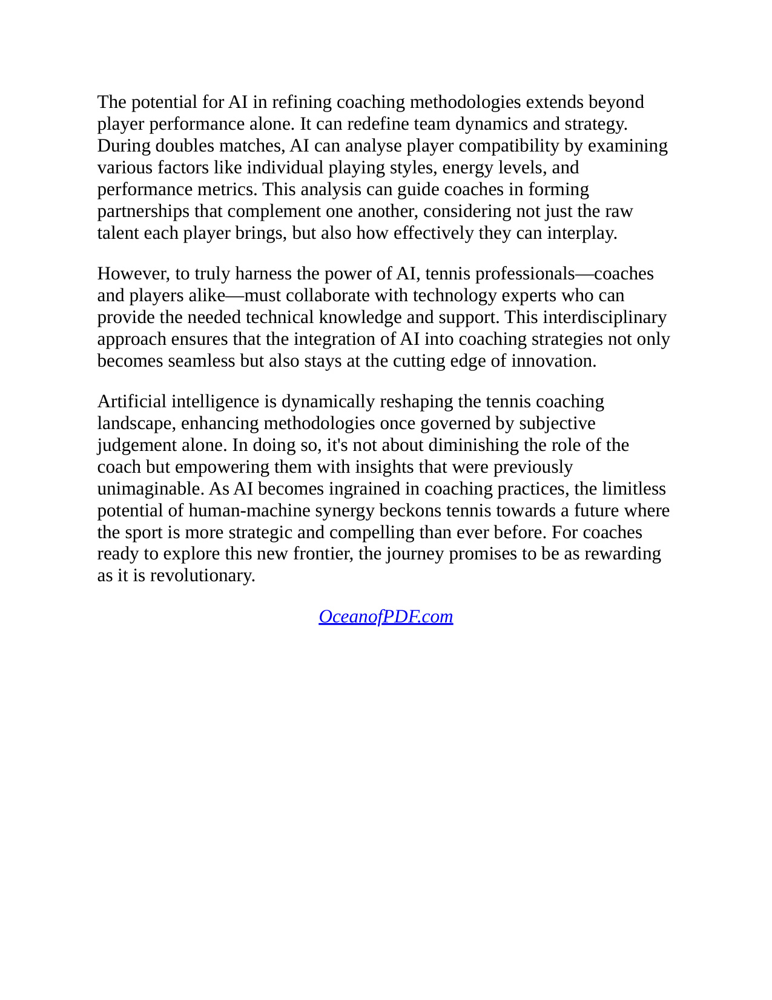
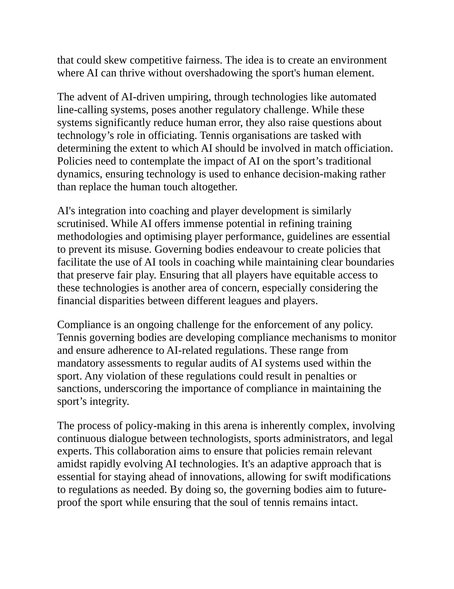

Phần I: Giao Lộ Giữa Quần Vợt & Trí Tuệ Nhân Tạo — Cuộc Cách Mạng Dữ Liệu Lớn
Sự tiến hóa từ thống kê truyền thống sang học máy, công nghệ thị giác máy tính Hawk-Eye Live và các chỉ số chuyên môn AI thế hệ mới
1. Mở Đầu & Sự Trỗi Dậy Của Trí Tuệ Nhân Tạo Trong Quần Vợt
Trong suốt hơn một thế kỷ lịch sử, quần vợt chủ yếu được vận hành dựa trên kinh nghiệm truyền khẩu, trực giác chủ quan của các huấn luyện viên và những số liệu thống kê thô sơ như tỷ lệ giao bóng một vào sân hay số lỗi tự đánh hỏng.
Tuy nhiên, trong thập niên vừa qua, sự bùng nổ của Trí tuệ Nhân tạo (Artificial Intelligence - AI), thị giác máy tính (Computer Vision) và dữ liệu lớn (Big Data) đã tạo nên một cuộc cách mạng sâu sắc làm thay đổi vĩnh viễn diện mạo của môn thể thao quý tộc.
Trong tác phẩm Game, Set, AI, tác giả Diana Keller dẫn dắt độc giả khám phá cách các thuật toán học máy (Machine Learning) và mạng nơ-ron nhân tạo đang thâm nhập vào mọi ngóc ngách của đời sống quần vợt: từ quyết định chiến thuật của các siêu sao hàng đầu, phương pháp đào tạo vận động viên trẻ, công nghệ phân xử trọng tài tự động, cho đến các mô hình dự báo y sinh học giúp ngăn ngừa chấn thương.
Quần vợt hiện đại không còn là cuộc đối đầu đơn độc giữa hai con người trên sân cỏ hay sân đất nện; đó là cuộc so tài trí tuệ đỉnh cao được tiếp sức bởi những hệ thống điện toán đám mây xử lý hàng triệu điểm dữ liệu theo thời gian thực.
2. Chương 1 & 2: Thị Giác Máy Tính Hawk-Eye Live & Các Chỉ Số AI Thế Hệ Mới
Bước đột phá dễ nhận thấy nhất của AI đối với người hâm mộ chính là sự biến mất dần của đội ngũ trọng tài biên truyền thống để nhường chỗ cho hệ thống "Bắt Lỗi Điện Tử Tự Động" (Electronic Line Calling - ELC), tiêu biểu là công nghệ Hawk-Eye Live.
Được trang bị hệ thống camera quang học chuyên dụng ghi hình với tốc độ lên tới ba trăm bốn mươi khung hình một giây bố trí quanh sân vận động, các thuật toán thị giác máy tính theo dõi tọa độ ba chiều của quả bóng trong suốt quỹ đạo bay.
Khi quả bóng tiếp xúc mặt sân, AI tính toán vết tiếp xúc hình elip và xác định quả bóng nằm trong hay ngoài vạch vôi trong vòng chưa đầy một phần mười giây với sai số đo đạc dưới ba milimet!
Khẩu lệnh "Out!" vang lên từ loa âm thanh tự động đã chấm dứt hoàn toàn những cuộc tranh cãi gay gắt kéo dài hàng thập kỷ giữa các tay vợt và trọng tài, bảo đảm tính công bằng tuyệt đối cho giải đấu.
Quan trọng hơn, AI đã mở ra một kỷ nguyên mới của các chỉ số hiệu suất chuyên sâu (AI-Driven Performance Metrics) vượt xa các bảng điểm thông thường:
Vận tốc góc quay của quả bóng (Revolutions Per Minute - RPM): Đo lường chính xác độ xoáy Topspin hoặc Slice của từng cú đánh.
Biên độ an toàn qua mép lưới (Net Clearance Margin): Phân tích chiều cao quỹ đạo bay của bóng so với mép lưới để đánh giá mức độ mạo hiểm chiến thuật.
Độ sâu điểm rơi (Shot Depth): Đo khoảng cách giữa điểm nảy của bóng và vạch cuối sân đối phương; bóng càng rơi sâu trong phạm vi một mét sát vạch đáy thì xác suất giành chiến thắng điểm số càng tăng vọt.
Thời gian cướp đoạt phản xạ (Time-to-Impact Denial): Đo lường khoảng thời gian từ lúc bóng rời mặt vợt của bạn cho đến khi chạm mặt vợt đối thủ, lượng hóa khả năng tạo sức ép tốc độ lên đối phương.

Hình 1: Bốn trụ cột công nghệ định hình hệ sinh thái Trí Tuệ Nhân Tạo (AI) trong quần vợt thế kỷ hai mươi mốt — Từ Thị giác máy tính, Phân tích chiến lược, Thiết bị thông minh đến Dân chủ hóa dữ liệu đào tạo.

Hình 9: Bóc tách quang học thời gian thực và mô hình hóa đường bóng 3D thông qua mạng nơ-ron học sâu.
Phần II: Chiến Lược Thực Chiến Thời Gian Thực, Bản Đồ Xác Suất & Sân Đấu Thông Minh
Mô hình học máy dự đoán lựa chọn cú đánh, quy luật bốn đường bóng đầu tiên và sự tích hợp mạng lưới IoT trên sân đấu thông minh
3. Chương 3: Mô Hình Dự Đoán Hướng Bóng & Quy Luật "Bốn Cú Đánh Đầu Tiên"
Một trong những ứng dụng quyền lực nhất của học máy trong quần vợt đỉnh cao là khả năng xây dựng các mô hình dự đoán hành vi chiến thuật (Predictive Modeling).
Không có bất kỳ tay vợt nào — dù là những thiên tài kiệt xuất nhất — có thể đưa ra quyết định đánh bóng hoàn toàn ngẫu nhiên.
Dưới áp lực thi đấu nghẹt thở, bản năng vô thức của con người luôn có xu hướng lặp lại các thói quen cơ bắp mà họ cảm thấy an toàn nhất.
Bằng cách nạp vào mô hình AI dữ liệu của hàng nghìn trận đấu trong quá khứ, các chuyên gia phân tích dữ liệu có thể tạo ra "Bản Đồ Nhiệt Xác Suất" (Probability Heatmaps) cho từng đối thủ cụ thể theo từng điểm số chi tiết:
Ví dụ: Khi đối mặt với điểm bẻ giao bóng bất lợi (Break Point ba mươi-bốn mươi), một tay vợt có xác suất giao bóng phẳng cắm góc chữ T lên tới bảy mươi tám phần trăm; nhưng khi ở điểm hòa bốn mươi-đều (Deuce), họ lại có thói quen giao bóng xoáy Slice xé góc mang ngoài sân.
Nắm giữ thông tin này, tay vợt trả giao bóng có thể chủ động dịch chuyển nửa bước chân về phía hướng bóng dự kiến ngay trước khi đối thủ tung bóng, biến cú giao bóng hiểm hóc thành một cơ hội phản công thuận lợi.
Bên cạnh đó, phân tích dữ liệu lớn AI đã lật nhào quan niệm truyền thống về chiến thuật thi đấu thông qua "Quy Luật Bốn Cú Đánh Đầu Tiên" (The First Four Shots Rule).
Trước đây, các tay vợt thường dành phần lớn thời gian trên sân tập để rèn luyện những loạt bóng bền kéo dài mười lăm đến hai mươi lần chạm vợt.
Tuy nhiên, thống kê AI từ hàng trăm nghìn trận đấu chuyên nghiệp chứng minh rằng: có tới gần bảy mươi phần trăm tổng số điểm số kết thúc trong vòng bốn cú đánh đầu tiên (Cú giao bóng, Cú trả giao bóng, Cú đánh thứ ba của người giao bóng và Cú đánh thứ tư của người trả bóng)!
Chỉ có dưới mười phần trăm điểm số kéo dài quá chín lần chạm vợt.
Những nhà vô địch như Novak Djokovic đã nhanh chóng tái cấu trúc toàn bộ giáo án huấn luyện: tập trung tối đa nguồn lực vào việc tối ưu hóa uy lực và độ chính xác của bốn cú đánh mở màn để giành quyền kiểm soát thế trận ngay từ vạch xuất phát.
4. Chương 5: Sân Đấu Thông Minh & Hạ Tầng Công Nghệ IoT
Sự chuyển dịch tiếp theo của cơ sở vật chất quần vợt là sự ra đời của các "Sân Đấu Thông Minh" (Smart Courts).
Tại các trung tâm đào tạo hiện đại, sân đấu được trang bị mạng lưới camera độ phân giải cao kết hợp các cảm biến Internet Vạn Vật (IoT) được cài đặt chìm dưới mặt sân và xung quanh lưới.
Hệ thống này tự động theo dõi và ghi nhận từng bước chạy, khoảng cách di chuyển, tốc độ bứt tốc và tần suất tiếp xúc bóng của vận động viên mà không yêu cầu họ phải đeo bất kỳ thiết bị dây dợ vướng víu nào trên cơ thể.
Ngay sau khi buổi tập kết thúc, hệ thống AI sẽ tự động xử lý và gửi một bản báo cáo phân tích toàn diện vào máy tính bảng của huấn luyện viên: hiển thị bản đồ nhiệt di chuyển, chỉ ra những khu vực trên sân mà vận động viên bị hở sườn phòng ngự, và so sánh hiệu suất buổi tập với các thông số thể lực tiêu chuẩn.
Công nghệ này giúp chuyển đổi quá trình huấn luyện từ việc phỏng đoán cảm tính sang một quy trình khoa học dựa trên bằng chứng dữ liệu xác thực tuyệt đối.

Hình 2: Sơ đồ dòng dữ liệu ra quyết định chiến thuật thời gian thực — Từ Thu thập dữ liệu camera 4K, Mô hình học máy Machine Learning, Bản đồ nhiệt xác suất đến Hành động điều chỉnh chiến thuật thực chiến.

Hình 10: Phân tích xác suất vị trí bóng rơi và đề xuất phương án trả bóng tối ưu theo thời gian thực.
Phần III: Vợt Thông Minh, Cảm Biến Sinh Học & Mô Hình Dự Báo Chấn Thương Bằng AI
Công nghệ cảm biến MEMS tích hợp trên thân vợt, theo dõi biến thiên nhịp tim HRV và thuật toán phát hiện vi chấn thương sớm
5. Chương 4 & 6: Vợt Thông Minh & Thiết Bị Đeo Sinh Học (Smart Rackets & Biometrics)
Sự tích hợp giữa phần cứng cảm biến siêu nhỏ và thuật toán phân tích AI đã biến các dụng cụ thi đấu truyền thống thành những thiết bị thu thập dữ liệu tinh vi.
Thế hệ "Vợt Thông Minh" (Smart Rackets) mới nhất được trang bị các cảm biến vi cơ điện tử (MEMS), gia tốc kế ba trục và con quay hồi chuyển tích hợp ẩn sâu bên trong nắp chuôi vợt (butt cap).
Sau mỗi buổi tập hoặc trận đấu, vợt thông minh đồng bộ dữ liệu không dây qua Bluetooth với điện thoại thông minh để cung cấp cho người chơi bức tranh chi tiết đáng kinh ngạc:
Tỷ lệ đánh trúng điểm ngọt (Sweet Spot Accuracy Rate): Cho biết bao nhiêu phần trăm cú đánh của bạn chạm đúng tâm mặt lưới, và bao nhiêu phần trăm bị lệch tâm về phía đầu vợt hay cổ vợt.
Gia tốc vung vợt và góc tiếp xúc: Phân tích xem bạn đang vuốt bóng tạo xoáy cuộn hay đánh bóng phẳng đè bóng.
Song song với vợt thông minh, các thiết bị đeo sinh học chuyên dụng (Biometric Wearables) như nhẫn thông minh hay băng đeo ngực theo dõi liên tục các chỉ số sinh lý then chốt của vận động viên.
Đặc biệt là chỉ số Biến thiên Nhịp tim (Heart Rate Variability - HRV): Đo lường sự chênh lệch thời gian giữa các nhịp tim liên tiếp.
Chỉ số HRV là tấm gương phản chiếu chính xác mức độ phục hồi của hệ thần kinh tự chủ sau các buổi tập nặng.
Nếu chỉ số HRV giảm sâu vào buổi sáng, AI sẽ khuyến cáo vận động viên điều chỉnh giáo án sang các bài tập kỹ thuật nhẹ nhàng thay vì các bài tập thể lực cường độ cao để tránh hội chứng quá tải thể lực (Overtraining).
6. Chương 9: Mô Hình Dự Báo & Phòng Ngừa Chấn Thương Bằng AI (Predictive Injury Modeling)
Một trong những đóng góp mang tính cách mạng và nhân văn nhất của AI đối với thể thao đỉnh cao là năng lực bảo vệ sức khỏe và kéo dài tuổi thọ sự nghiệp của vận động viên thông qua các "Mô Hình Dự Báo Chấn Thương" (Predictive Injury Modeling).
Các chấn thương nghiêm trọng trong quần vợt — như rách cơ bụng, viêm gân chóp xoay khớp vai (Rotator Cuff Tendinitis), hay thoái hóa sụn khớp háng — hiếm khi xảy ra ngẫu nhiên trong chớp mắt.
Chúng thường là kết quả tích lũy của hàng nghìn vi chấn thương siêu nhỏ kéo dài qua nhiều tuần thi đấu quá tải mà mắt thường của con người không thể nhận thấy.
Bằng cách phân tích liên tục dữ liệu thị giác từ video quay chậm kết hợp thông số tải trọng sinh học, các thuật toán học sâu (Deep Learning) có thể phát hiện những thay đổi cơ sinh học cực kỳ tinh vi:
Sự bất đối xứng vi mô trong sải bước chân khi di chuyển đổi hướng sang hai bên sân.
Sự suy giảm chỉ vài độ trong biên độ xoay ngoài của khớp vai khi thực hiện cú giao bóng.
Sự kéo dài thêm vài mili-giây trong thời gian bàn chân chạm đất khi tiếp đất sau cú nhảy đập bóng.
Ngay khi các chỉ số này vượt qua ngưỡng an toàn, hệ thống AI sẽ phát tín hiệu cảnh báo sớm: "Cơ vai phải có nguy cơ tổn thương cấp độ hai trong vòng mười ngày tới nếu không giảm tải trọng giao bóng".
Nhờ sự can thiệp kịp thời này, các bác sĩ thể thao và chuyên gia vật lý trị liệu có thể chủ động điều chỉnh phác đồ tập luyện, xoa bóp phục hồi cơ bắp và ngăn chặn chấn thương xảy ra từ trước khi vận động viên thực sự cảm thấy đau đớn.

Hình 11: Đo lường xung lực khớp vai, góc mở cổ tay và gia tốc đầu vợt thông qua cảm biến telemetry tích hợp.
Phần IV: AI Hỗ Trợ Tâm Lý, Dân Chủ Hóa Dữ Liệu & Tương Lai Nhân Bản Của Quần Vợt
Phân tích ngôn ngữ cơ thể cảnh báo hiện tượng Choking, ứng dụng smartphone AI cho người chơi phong trào và vai trò cộng sự tối thượng
7. Chương 11: AI Trong Rèn Luyện Tâm Lý & Cảnh Báo Nguy Cơ "Nghẽn Thở" (Choking)
Bên cạnh kỹ thuật và thể lực, khía cạnh tâm lý học thi đấu cũng đang được nâng tầm mạnh mẽ nhờ sự trợ giúp của trí tuệ nhân tạo.
Bằng cách phân tích các luồng video độ nét cao, các mô hình thị giác AI có thể theo dõi vi biểu cảm khuôn mặt, tần suất chớp mắt, tư thế vai và các hành vi vô thức lặp đi lặp lại của vận động viên giữa các điểm số (chẳng hạn như hành động liên tục chỉnh dây vợt hay cúi gằm mặt nhìn xuống đất).
Các nghiên cứu hành vi chứng minh rằng: khi một tay vợt bắt đầu bị xâm chiếm bởi nỗi sợ hãi thất bại và rơi vào trạng thái "nghẽn thở tâm lý" (Choking), ngôn ngữ cơ thể của họ sẽ thay đổi rõ rệt trước khi các lỗi đánh hỏng xuất hiện.
Nhịp tim tăng vọt, hơi thở trở nên nông và nhanh, và thời gian chuẩn bị trước cú giao bóng bị rút ngắn lại do nôn nóng muốn trốn chạy áp lực.
Các hệ thống AI phân tích thời gian thực có thể nhận diện các dấu hiệu cảnh báo đỏ này và phát tín hiệu đến ban huấn luyện.
Từ đó, các chuyên gia tâm lý có thể hướng dẫn tay vợt áp dụng các bài tập tái định tâm, hít thở sâu bốn-bảy-tám để tái lập sự cân bằng cho hệ thần kinh trước khi quá muộn.
8. Chương 16: Dân Chủ Hóa Công Nghệ Cho Quần Vợt Phong Trào & Thanh Thiếu Niên
Trong nhiều thập kỷ, công nghệ phân tích dữ liệu cao cấp và hệ thống camera đắt tiền chỉ là đặc quyền xa xỉ dành riêng cho các giải Grand Slam hoặc các siêu sao hàng đầu thế giới có tiềm lực tài chính khổng lồ.
Tuy nhiên, cuộc cách mạng AI hiện nay đang thực hiện sứ mệnh cao cả: "Dân chủ hóa dữ liệu" (Democratizing Analytics) đến từng người chơi phong trào và các học viên thanh thiếu niên ở khắp mọi nơi trên thế giới.
Sự ra đời của các ứng dụng trí tuệ nhân tạo trên điện thoại thông minh (tiêu biểu như ứng dụng SwingVision AI) là một ví dụ điển hình.
Chỉ với một chiếc điện thoại thông minh thông thường được gắn lên hàng rào lưới phía sau sân bằng giá đỡ đơn giản, thuật toán thị giác máy tính chạy trực tiếp trên thiết bị (On-Device Neural Engine) có thể tự động theo dõi toàn bộ trận đấu của bạn:
Tự động bắt bóng trong hay ngoài vạch vôi với độ chính xác cao.
Đo lường vận tốc của từng cú giao bóng và cú thuận tay.
Phân loại tỷ lệ cú đánh topspin, slice hay flat.
Tự động cắt ghép và biên tập toàn bộ các pha bóng hay nhất (highlights) của trận đấu kéo dài hai giờ thành một đoạn clip ngắn gọn năm phút để người chơi dễ dàng xem lại và chia sẻ lên mạng xã hội.
Công nghệ này xóa nhòa khoảng cách giữa sân chơi nghiệp dư và đấu trường chuyên nghiệp, trao quyền cho bất kỳ ai yêu mến môn thể thao này có cơ hội tiếp cận phương pháp học tập khoa học và hiện đại nhất.
9. Chương 25 & Lời Kết: Tương Lai Nhân Bản — AI Là Cộng Sự Tối Thượng
Một câu hỏi lớn luôn được đặt ra trong kỷ nguyên số: Liệu trí tuệ nhân tạo có thể thay thế huấn luyện viên hay làm mất đi vẻ đẹp lãng mạn vốn có của môn quần vợt truyền thống hay không?
Câu trả lời dứt khoát của tác giả Diana Keller là KHÔNG.
Dù các thuật toán máy tính có thể phân tích hàng triệu dữ liệu nhanh hơn bất kỳ bộ não con người nào, AI không bao giờ có thể cảm nhận được trái tim quả cảm, lòng kiên định sắt đá, sự đồng cảm sâu sắc giữa thầy và trò, hay niềm xúc động nghẹn ngào khi một tay vợt vượt qua nghịch cảnh để nâng cao chiếc cúp vô địch danh giá.
Trí tuệ nhân tạo không sinh ra để thay thế con người; AI sinh ra để trở thành "Cộng Sự Tối Thượng" (The Ultimate Ally).
Nó giải phóng các huấn luyện viên khỏi công việc ghi chép thống kê tẻ nhạt để họ có thể tập trung toàn bộ tâm huyết vào việc truyền cảm hứng, rèn giũa bản lĩnh tinh thần và kết nối cảm xúc với học trò.
Khi công nghệ tiên tiến nhất hòa quyện cùng trái tim nhiệt huyết và tài năng con người, môn quần vợt sẽ bước vào một kỷ nguyên phát triển rực rỡ và nhân bản hơn bao giờ hết.